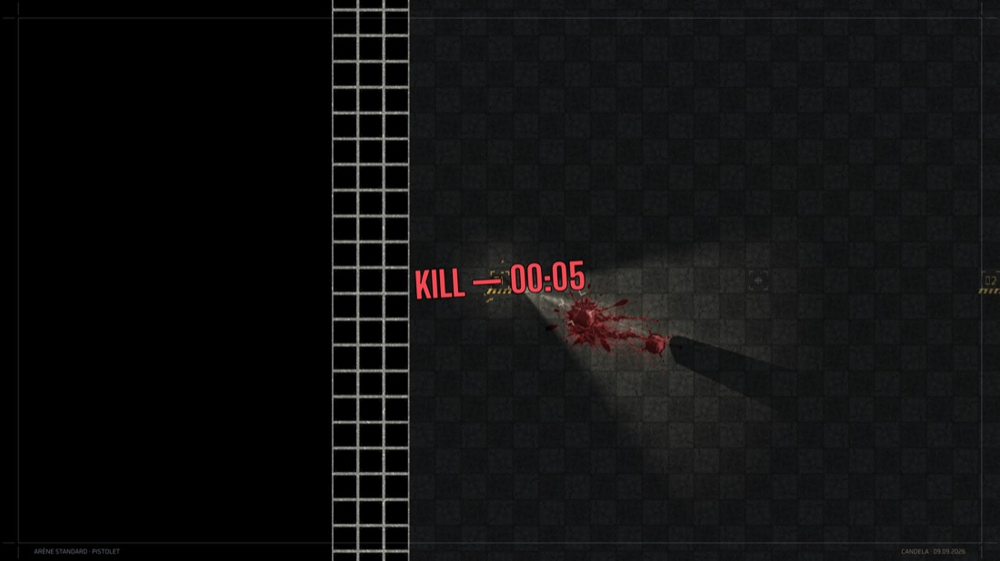
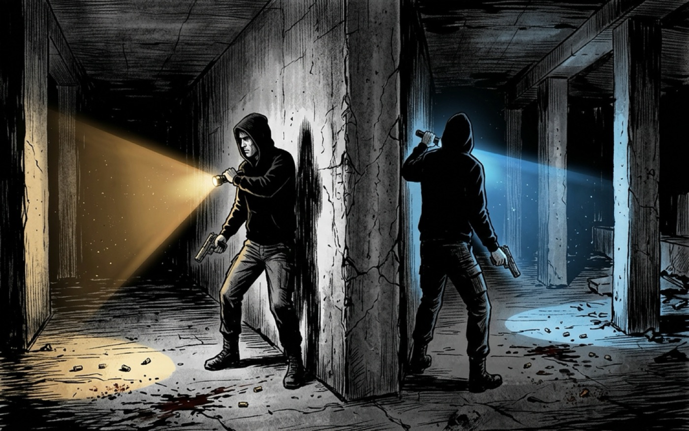
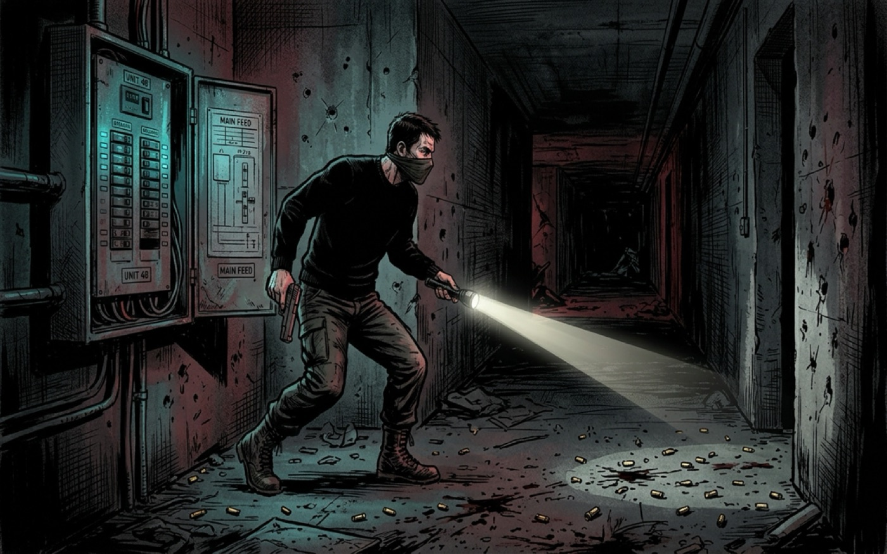
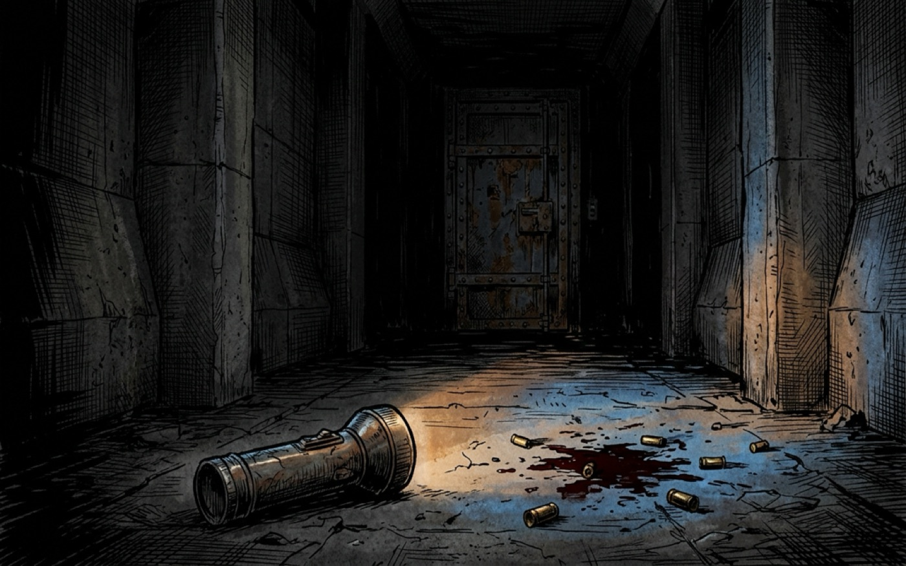

Candela
Voir sans être vu.
Tuer sans être tué.
Un duel à deux dans le noir absolu. Vous avez une lampe torche et une arme. Votre adversaire aussi. Le faisceau qui vous montre où il est lui montre où vous êtes.
Jouer


Les deux liens pointent vers la dernière version publiée : ils restent valables à chaque sortie, sans que cette page change. La version 0.3.1 a été publiée le 9 septembre 2026. Une fois installé, le jeu se met à jour tout seul.




Éclairer, c’est voir.
Éclairer, c’est être vu.
Quatre armes
Choisir une arme,
c’est choisir
comment on se trahit
Chaque arme porte sa propre torche. Elles ne diffèrent pas seulement par les dégâts : elles diffèrent par la quantité de vous-même qu’elles montrent au reste de la carte.
L’arbalète est la seule à éclairer au-delà de ce que son porteur peut voir : un fil de lumière de 5°, silencieux, qui atteint des endroits dont il ne recevra jamais l’image. C’est l’arme furtive, et le privilège de porter hors champ lui revient à elle seule.

Compétitif
Dix rangs,
de l’aveugle
à l’unité de lumière
Le classement se compte en ELO et se nomme en lumière. On commence sans rien voir ; on finit par porter le nom de l’unité qui mesure l’intensité d’une bougie.

Fiche
Technique
La règle
La seule information
est la lumière
Il n’y a pas de mini-carte, pas de marqueur d’ennemi, pas de contour rouge dans le noir. Un mur bloque la lumière comme il bloque une balle : la torche s’arrête où le décor s’arrête, et ce que vous n’éclairez pas n’existe pas.
Trois signaux, et rien d’autre.
La torche
Le faisceau que vous tenez. Il révèle le sol, les murs, et la silhouette de l’autre s’il entre dedans. Il vous désigne aussi, de très loin.
La rétrodiffusion
Ce que la lumière de l’autre laisse sur les murs autour de vous. On sait qu’il est là avant de le voir — parfois.
Le flash de tir
Une image de votre position, imprimée dans le noir pendant une fraction de seconde. Tirer, c’est parler.
Éteignez.
Candela est développé par une personne. Le fond de la première case et les trois vues des signaux sont de véritables captures de partie, prises sans interface ; les cases pleine largeur sont des illustrations. Toutes les versions.